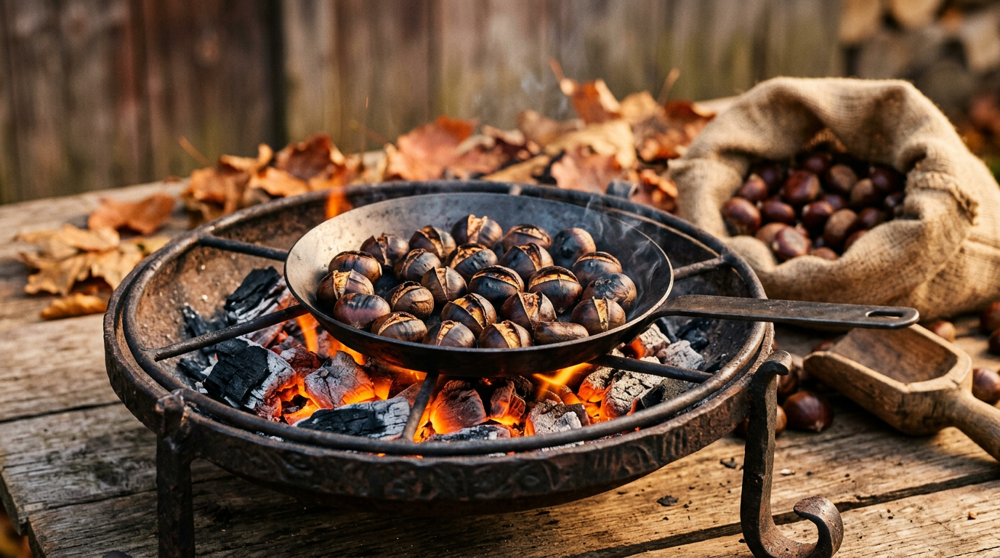

Ottobre e le castagne — la stagione delle sagre.

Ottobre è il mese più goloso dei Castelli Romani. In poche settimane si concentrano tre appuntamenti di primissimo piano — la Sagra dell'Uva di Marino, la Sagra dell'Uva Italia e delle Pincinelle di Colonna, la Sagra delle Castagne di Rocca di Papa — a cui si affiancano numerose iniziative minori. Ecco il calendario ragionato.
Marino: il centenario dell'Uva
La Sagra dell'Uva di Marino apre di fatto la stagione. L'edizione 2026 celebra il centenario della manifestazione, nata nel 1925 da un'idea del poeta Leone Ciprelli per commemorare la vittoria della battaglia di Lepanto del 7 ottobre 1571, in cui Marcantonio Colonna guidò una parte della flotta cristiana della Lega Santa ([Castelli Notizie](https://www.castellinotizie.it/2026/08/22/settembre-e-ottobre-ai-castelli-romani-e-trionfo-di-sagre-porcini-porchetta-pane-uva-vino-e-castagne/)).
Le date confermate dal sito ufficiale sono due weekend: 26 e 27 settembre e 3, 4 e 5 ottobre 2026 ([Sagra dell'Uva Marino — sito ufficiale](https://www.sagradelluvamarino.it/)). Il clou resta la domenica: intorno alle 17:30 la Fontana dei Quattro Mori, in Piazza Matteotti, smette di erogare acqua e sgorga vino bianco DOC dei Castelli. È il celebre miracolo delle fontane, preceduto dal corteo storico in costume rinascimentale ([Castelli Romani Online](https://castelliromanionline.it/sagra-delluva-di-marino-2026-date-e-programma/)). Ingresso gratuito. Marino è raggiungibile in treno regionale dalla stazione Termini di Roma in circa quaranta minuti.
Colonna: uva Italia e pincinelle
Nel piccolo comune di Colonna, dal 10 al 13 ottobre 2026, si tiene la 64esima edizione della Sagra dell'Uva Italia e delle Pincinelle ([Castelli Notizie](https://www.castellinotizie.it/2026/08/22/settembre-e-ottobre-ai-castelli-romani-e-trionfo-di-sagre-porcini-porchetta-pane-uva-vino-e-castagne/)). L'uva Italia è la varietà bianca da tavola tipica del territorio; le pincinelle sono una pasta fresca a mano, sagoma affusolata, ottenuta con gli avanzi del pane raffermo. È una sagra meno turistica di Marino, con un profilo più familiare e prezzi contenuti.
Rocca di Papa: le castagne, quel fine settimana lì
La 46esima edizione della Sagra delle Castagne di Rocca di Papa cade, secondo tradizione, nel terzo fine settimana di ottobre: da venerdì 16 a domenica 18 ottobre 2026 ([Castelli Notizie](https://www.castellinotizie.it/2026/08/22/settembre-e-ottobre-ai-castelli-romani-e-trionfo-di-sagre-porcini-porchetta-pane-uva-vino-e-castagne/)). La sagra celebra la Rocchicianella, la varietà locale di castagna dolce e piccola, coltivata su oltre duemila ettari di castagneti attorno al paese ([Visit Castelli Romani — Rocca di Papa](https://www.visitcastelliromani.it/informazioni/rocca-di-papa/events/)).
Le vie del centro storico ospitano stand enogastronomici con caldarroste, mercatini di artigianato, concerti dal vivo, un corteo storico in costume con sbandieratori. La domenica chiude un grande spettacolo pirotecnico dalla Fortezza Medievale ([Città Metropolitana di Roma](https://www.cittametropolitanaroma.it/events/event/rocca-di-papa-sagra-delle-castagne-gusto-tradizione-e-spettacolo/)). Ingresso gratuito, dalle 10:00 fino a sera. Rocca di Papa dista dodici chilometri da Castel Gandolfo: in auto sono venti minuti attraverso i boschi del vulcano laziale.
“La Rocchicianella, dalle piccole dimensioni e dal gusto dolce, prodotta in più di 2000 ettari di castagneti, rappresenta uno dei più grandi vanti del paese.”Visit Castelli Romani — scheda Rocca di Papa
Le altre sagre di ottobre
Il calendario di ottobre nei Castelli e nei comuni limitrofi si allunga con diversi appuntamenti minori ma di qualità. Frascati ospita la Fiera dei Sapori d'Italia a Villa Torlonia, in programma dal 17 settembre al 4 ottobre: una vera fiera enogastronomica, non una sagra ([Turistipercaso](https://turistipercaso.it/destinazioni/porchetta-vino-e-castagne-le-5-sagre-dell-autunno-2026-da-vivere-ai-castelli-romani.html)). A Cave, dal 18 al 26 ottobre, va in scena la storica Sagra della Castagna e dei Prodotti Tipici. A Segni, dal 23 al 26 ottobre, si celebra il marrone Segnino, varietà nobile e apprezzata: le tradizionali fraschette del centro storico offrono menù a partire da quindici euro ([Sagr.it — Il marrone Segnino](https://sagr.it/lazio/roma-e-dintorni/eventi/il-marrone-segnino)).
Chi soggiorna a Castel Gandolfo può contare su una base logistica ideale: tutte queste sagre sono raggiungibili in venti-quaranta minuti d'auto, e alcune direttamente in treno regionale via Albano Laziale. La Sagra delle Fragole di Nemi, va precisato, è invece un evento primaverile: la prossima edizione è prevista per domenica 7 giugno 2026, non ricorre in ottobre ([Idealista — Sagra Fragole Nemi 2026](https://www.idealista.it/news/vacanze/mete-turistiche/2026/05/22/377175-sagra-delle-fragole-di-nemi-2026-data-programma-e-come-arrivare)).
Prenotare l'alloggio con largo anticipo, specialmente per i weekend del 3-5 ottobre e del 17-19 ottobre, è vivamente consigliato: sono i fine settimana più intensi dell'anno per i Colli Albani, con affluenze di decine di migliaia di visitatori concentrati nei borghi.